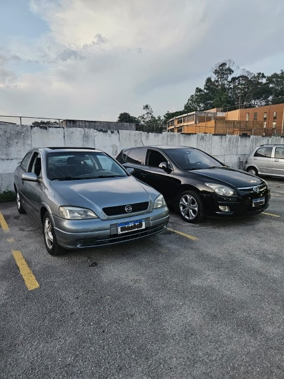
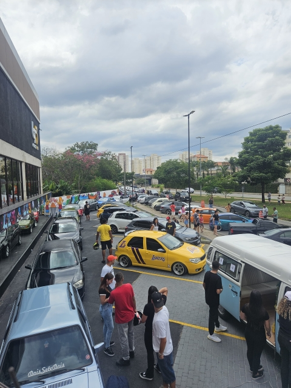

Home
Bem-vindos ao nosso espa√ßo dedicado √† paixão que corre em nossas veias: o mundo dos carros! Aqui, Gabriel Garcia e Juan Queiroz, dois amigos unidos pelo amor aos motores e √†s estradas, compartilham suas experi√™ncias, hist√≥rias e conhecimentos sobre o universo automotivo. Este site nasceu da nossa vontade de transformar um hobby em algo maior, um lugar onde outros entusiastas pudessem se sentir em casa. Queremos criar uma comunidade onde a paixão por carros seja o elo que nos une, um espa√ßo para trocar ideias, aprender e celebrar tudo o que torna o mundo automotivo tão fascinante. Preparem-se para embarcar em uma jornada repleta de adrenalina, nostalgia e muita informa√ß√£o. Dos clássicos que marcaram √©poca aos lan√ßamentos mais modernos, vamos explorar cada detalhe desse universo que nos apaixona. Apertem os cintos e vamos juntos acelerar rumo a novas descobertas! üöóüí®...
Sobre
Este site é um projeto pessoal criado por Gabriel Garcia e Juan Queiroz, dois amigos apaixonados pelo mundo automotivo. Nossa intenção é compartilhar um pouco do nosso hobby, que vai desde passeios de carro e encontros de entusiastas até a exploração da cultura e história dos automóveis. Criamos este espaço com fins educacionais e de entretenimento, buscando conectar pessoas que compartilham do mesmo interesse. Aqui, você encontrará relatos de nossas experiências, dicas, informações sobre eventos e tudo o que envolve o universo dos carros. Nosso objetivo é criar uma comunidade onde a paixão por carros seja o ponto de encontro, um lugar para aprender, trocar ideias e celebrar essa paixão que nos move.
Conteúdo
Bem-vindo ao nosso mundo de paixão por carros! Aqui, a adrenalina dos motores e a beleza das máquinas se encontram em um só lugar. Somos um grupo de entusiastas que vivem e respiram o universo automotivo, e este site é o nosso espaço para compartilhar essa paixão com você. Nossa jornada: Reviva conosco os momentos épicos dos encontros que participamos. Cada foto captura a energia contagiante e a camaradagem que unem os amantes de carros. Acompanhe a transformação dos nossos carros, desde o conceito até a execução. Mostramos cada etapa das modificações, com fotos e vídeos exclusivos. Junte-se a nós nessa jornada! Compartilhe suas histórias, fotos e projetos. Aqui, todos são bem-vindos para celebrar a paixão por carros. O que você encontrará aqui: